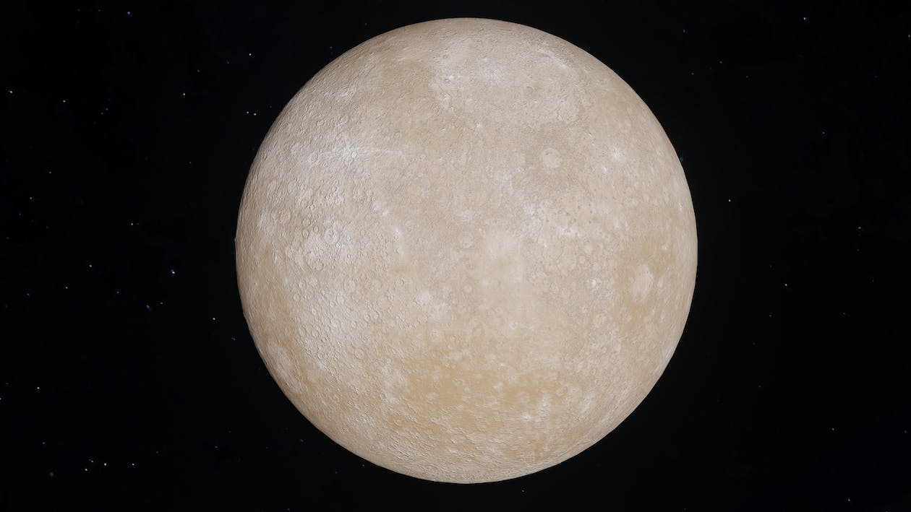
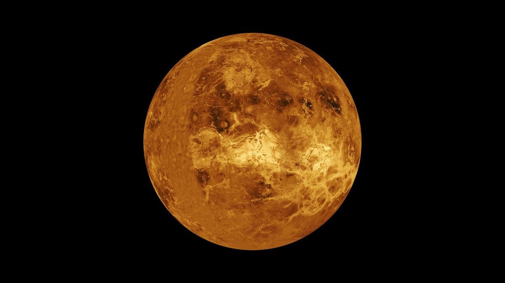
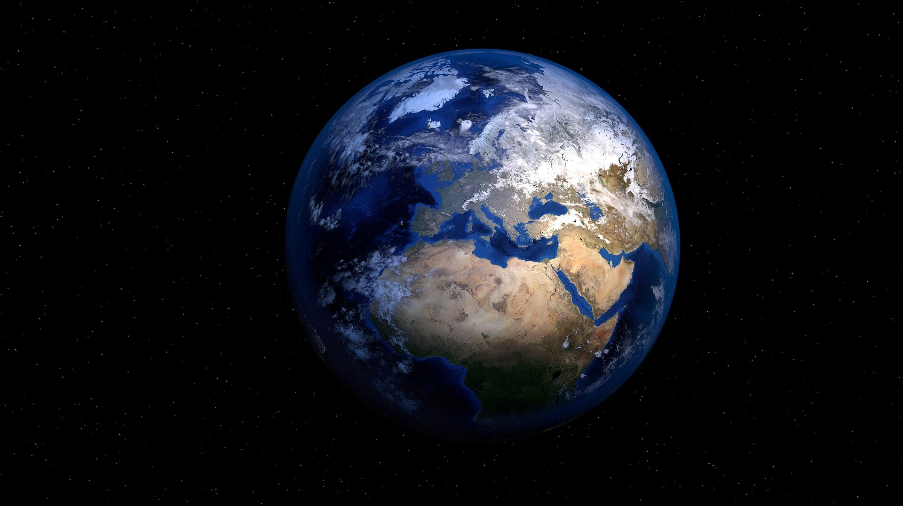
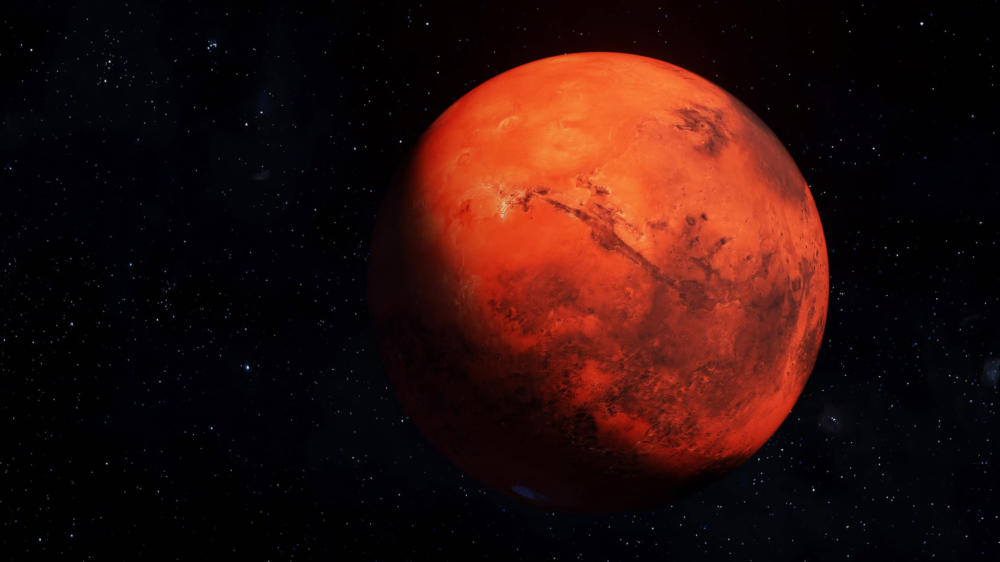
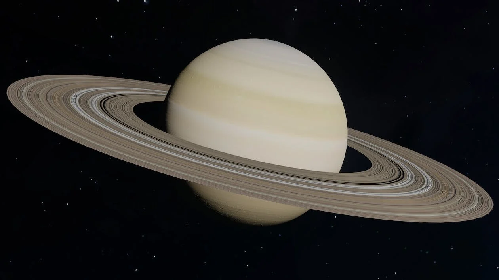
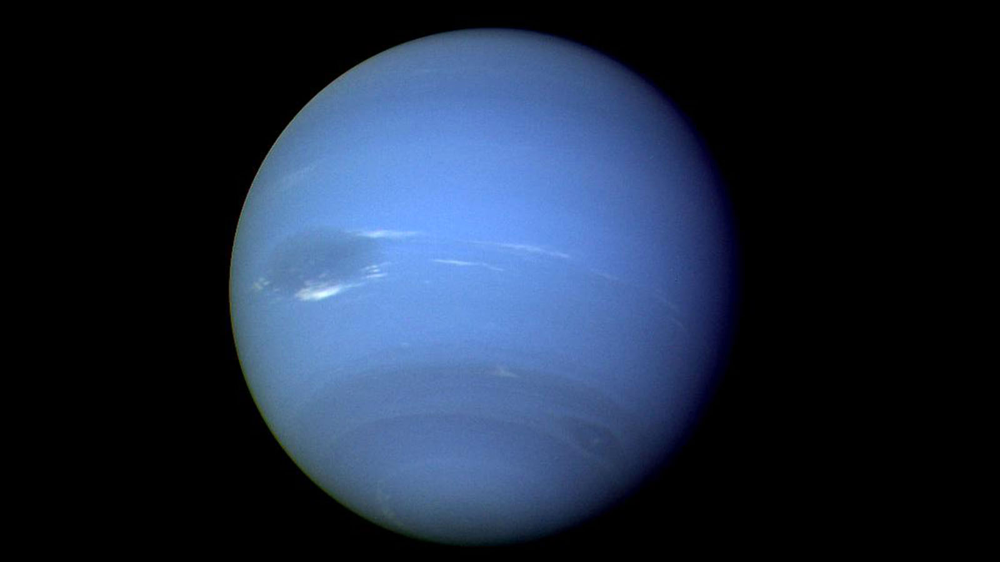

Purifying a planet, in a literal sense, involves cleansing it of any pollutants, contaminants, or harmful substances to make it more habitable for humans or other life forms. While the concept of planet purification is currently the stuff of science fiction, it's an intriguing idea to explore how such a process might unfold, even if it remains beyond our current technological capabilities. In this ambitious narrative, I will describe the process of purifying each of the eight planets in our solar system, using at least 1000 words to ensure a comprehensive exploration.
⇨ Mercury - The Fiery Messenger

Mercury, the closest planet to the Sun, presents one of the most challenging environments for human habitation. Its proximity to the Sun results in extreme temperature fluctuations, with scorching days and frigid nights. To purify Mercury, we must first address these temperature extremes. One approach might involve creating a colossal, heat-resistant shield to block excess sunlight, while simultaneously developing advanced thermal insulation to maintain a stable temperature.
Another major challenge on Mercury is its lack of a substantial atmosphere. Without a protective shield of gases, the planet is bombarded by solar radiation and micrometeorites. Purifying Mercury would require creating an artificial atmosphere, a process known as terraforming. This atmosphere would not only protect the surface but also allow for the circulation of gases and the stabilization of temperatures.
Next, the surface of Mercury is covered in craters, a result of countless cosmic collisions over eons. Purification would involve a massive effort to fill in or level these craters, providing a more stable and hospitable terrain. Additionally, introducing water and vegetation to the surface would help to further stabilize the environment and make it more suitable for life.
⇨ Venus - The Goddess of Love and Heat

Venus, known for its extreme heat and thick, corrosive atmosphere, poses a significant challenge for purification. To make Venus more habitable, we would need to address its surface temperatures, which are hot enough to melt lead. Advanced technologies could be used to create a colossal system of sunshades, orbital mirrors, or reflective particles in the upper atmosphere to reduce the amount of sunlight reaching the surface.
Furthermore, the dense atmosphere of Venus, mostly composed of carbon dioxide, is a major hurdle to overcome. To purify this planet, we might employ massive carbon capture and sequestration systems, coupled with the introduction of greenhouse gases like nitrogen and oxygen to gradually transform the atmosphere into a more Earth-like composition.
Venus' surface is marked by vast plains and highland regions, many of which exhibit volcanic activity. Purification efforts would entail advanced geological engineering, perhaps involving the creation of a network of underground habitats to shield against the extreme surface conditions. Surface infrastructure would need to be designed to withstand the planet's corrosive atmosphere.
⇨ Earth - Our Beloved Blue Oasis

While Earth is our home, it is not immune to the impacts of pollution and environmental degradation. To purify our own planet, we must take significant steps to address climate change, reduce pollution, and protect natural ecosystems. This involves transitioning to renewable energy sources, reducing greenhouse gas emissions, and implementing sustainable practices in agriculture and industry.
Conservation efforts would be key to preserving Earth's biodiversity. This includes creating and protecting natural reserves and wildlife sanctuaries, enforcing sustainable fishing practices, and preventing deforestation.
To address pollution, purifying Earth would require large-scale efforts to clean up contaminated areas, reduce plastic waste, and manage toxic materials safely. It would involve investing in advanced waste management and recycling technologies to minimize our impact on the environment.
⇨ Mars - The Red Wanderer

Mars, often dubbed a potential second home for humanity, offers unique challenges for purification. To make Mars more habitable, we would need to address its thin atmosphere and lack of a magnetic field, which leaves the surface exposed to harmful solar and cosmic radiation.
One crucial step in the purification of Mars would be to thicken its atmosphere. This could be accomplished by introducing greenhouse gases, like carbon dioxide, which would trap heat and raise surface temperatures. Advanced technology might enable us to release gases from underground reservoirs or import them from other celestial bodies.
Mars' surface is covered in iron oxide, giving it a reddish appearance. This iron-rich soil could be processed to extract oxygen and refine the regolith, making it suitable for agriculture. Greenhouses equipped with artificial lighting could support plant growth in the Martian soil.
Purifying Mars would also involve creating underground habitats to shield against radiation and extreme surface conditions. These habitats would be equipped with life support systems, waste recycling, and radiation shielding to ensure human survival.
⇨ Jupiter - The King of Giants

Jupiter, the largest planet in our solar system, is a gas giant composed mostly of hydrogen and helium. It lacks a solid surface, which presents a unique challenge for purification. To make Jupiter more habitable, we would need to develop advanced floating habitats that can endure the turbulent atmosphere.
The atmosphere of Jupiter is filled with violent storms and intense radiation. Purification would require creating massive, resilient platforms suspended in the atmosphere, equipped with shielding to protect against radiation and extreme temperatures. Advanced materials and energy sources would be essential for these platforms.
One of the significant hurdles in purifying Jupiter is the lack of solid ground for agriculture. Advanced biotechnology and hydroponics could be employed to cultivate food in controlled environments within the floating habitats. Synthetic ecosystems could be designed to support a variety of plant and animal life.
⇨ Saturn - The Lord of Rings

Saturn, famous for its stunning system of icy rings, offers unique challenges and opportunities for purification. The rings themselves could serve as a valuable resource for constructing habitats and generating energy through solar panels.
Saturn's atmosphere, primarily composed of hydrogen and helium, presents challenges similar to those on Jupiter. To purify Saturn, we would need to create floating habitats in the planet's atmosphere. These habitats could extract hydrogen and helium from the atmosphere for fuel and life support systems.
The icy rings of Saturn could be harvested for water, which would be essential for sustaining life within the floating habitats. Advanced technologies would be required to extract and purify water from the rings and to distribute it throughout the habitats.
The absence of a solid surface on Saturn also means that agriculture would need to be conducted in controlled environments within the habitats. Advanced hydroponic and biotechnology systems would be crucial for growing food and supporting ecosystems.
⇨ Uranus - The Sideways Wonder

Uranus, an ice giant with a peculiar sideways rotation, presents distinctive challenges for purification. The planet's extreme axial tilt results in extreme seasonal variations, making it essential to develop advanced climate control systems for any potential habitats.
To make Uranus more habitable, we would need to create floating platforms or submersible habitats in the planet's thick atmosphere. These platforms could be equipped with advanced climate control systems to maintain stable temperatures and protect against the harsh environment.
Uranus also has a unique system of faint rings. These rings could be utilized for resource extraction and energy generation, providing valuable materials for habitat construction and power generation.
The absence of a solid surface on Uranus would require agriculture to be conducted in controlled environments within the habitats. Advanced biotechnology and hydroponic systems would be essential for growing crops and supporting ecosystems.
⇨ Neptune - The Mysterious Deep Blue

Neptune, the farthest planet from the Sun, is a frigid ice giant with a turbulent atmosphere. Purifying Neptune would require creating advanced submersible habitats capable of withstanding extreme pressure and cold temperatures.
The planet's tempestuous atmosphere is characterized by fierce winds and violent storms. Advanced structural materials and engineering would be necessary to construct habitats that can endure these conditions.
Neptune's deep blue appearance is due to the presence of methane in its atmosphere. Extracting and processing methane for energy and life support systems would be crucial for the purification of this planet.
Like the other gas giants, Neptune lacks a solid surface, necessitating agriculture to be conducted in controlled environments within the habitats. Advanced biotechnology and hydroponics could be employed to grow food and sustain ecosystems.
In summary, the concept of purifying planets in our solar system is a complex and ambitious endeavor that would require advanced technologies and a deep understanding of planetary science. Each planet presents its unique challenges, from extreme temperatures to hostile atmospheres and the absence of solid surfaces. While these ideas remain in the realm of science fiction for now, they serve as a fascinating thought experiment and a testament to humanity's boundless curiosity and ingenuity as we continue to explore and understand the cosmos.